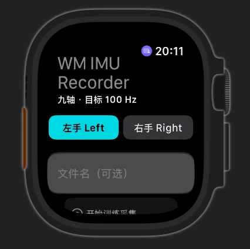
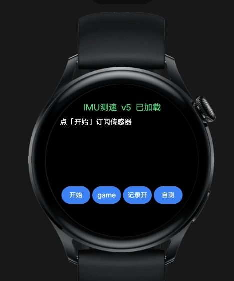

背负式真值采集平台
将九轴惯导、OAK 相机、RTK 接收机与计算主机集成到背负装备中。室外以 GNSS 融合定位为参考，室内用视觉惯性里程计回环重建相对轨迹。
将九轴惯导、OAK 相机、RTK 接收机与计算主机集成到背负装备中。室外以 GNSS 融合定位为参考，室内用视觉惯性里程计回环重建相对轨迹。


Apple Watch 九轴采集目标为 100 Hz，vivo WATCH 6 原生六轴约 12 Hz。两端均可标记佩戴手，分别记录了 64 条和 50 条设备轨迹。
8 个采集日，覆盖 5 类场景，包含步行、慢跑、间歇跑及频繁抬手跑等动作。轨迹数、里程与时长均按设备累计。
对齐腕部姿态、识别摆臂周期，用多尺度记忆估计速度与方向。
在惯性轨迹上联合优化速度与稀疏位置观测，校正长距离漂移。
| 路线范围 | 纯 IMU | 稀疏 GNSS | 均值降幅 |
|---|---|---|---|
| 画廊全部10 条 | 37.59 | — | — |
| 室外8 条 | 45.99 | 5.95 | 87.1% |
| 室内2 条 | 4.00 | — | — |
每条路线等权，按参考轨迹对齐。仅 8 条室外路线有 GNSS 对比，稀疏观测与评估真值同源。 查看轨迹画廊 ↗
操场漫步加入 3 个稀疏 GNSS 点后，全程位置均方根误差由 2.11 米降至 1.45 米。
超大尺度 · 长距离拼接
2026 年 11 月 16 日 ／ Apple Watch AW1 ／ 五段跑步记录
每段终点一次定位
全程 5 个 GNSS 观测点
按采集顺序拼接，跳过段间停录。辅助曲线为五个段末观测的离线校正结果。段末误差取校正位置与同源观测的距离。
五段使用各自的惯性预测，第一段以参考路线对齐初始位置和航向，后续段继承上一段预测的末位姿。前两段在基准训练划分，后三段在测试划分，五段记录均未参与对应推理模型的训练。时间为北京时间，yaw 表示行进航向。
两幅地图同步回放同一段手表记录。辅助轨迹约每 60 秒接收一个 GNSS 位置。黑点亮起时，红线更新此前的路线，再继续向前推算。
误差按最终回放轨迹计算，排除起点和观测时刻。观测点取自同一条 GNSS 参考轨迹。
按采集时间回放 31 组测试轨迹。右侧速度由相邻位置随时间的变化计算。